| Hierarchical Layout Style | ||
|---|---|---|
| Prev | Chapter 5. Automatic Graph Layout | Next |
This section presents the hierarchical layout style.
The hierarchical layout style aims to highlight the main direction or flow within a directed graph. The nodes of a graph are placed in hierarchically arranged layers such that the (majority of) edges of the graph show the same overall orientation, for example, top-to-bottom. Additionally, the ordering of the nodes within each layer is chosen in such a way that the number of edge crossings is small.
Figure 5.29. Samples of the hierarchical layout style
|
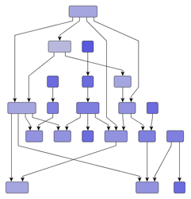
|
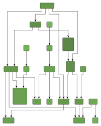
|
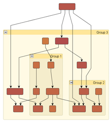
|
| Hierarchical layout with polyline edge routing... | ... and with orthogonal edge routing. | ... of a grouped graph. |
Note that in an acyclic graph, it is always possible that all edges have the same overall orientation. In a graph that contains cyclic dependencies between nodes, they are automatically detected and resolved.
Figure 5.29, “Samples of the hierarchical layout style” shows several hierarchical layouts with top-to-bottom orientation. Note that the hierarchical layout style can be combined with polyline, orthogonal, and octilinear edge routing. Also, layout of grouped graphs is naturally covered by the hierarchical layout style, too.
The layout algorithm provided by the yFiles diagramming library for the hierarchical layout style facilitates convenient automatic generation of high-quality layouts. It supports a variety of features that influence many aspects in the layout process, assists with different predefined behaviors to combine and choose from, and enables flexible customization of the layout process if needed.
The hierarchically arranged layers that are typical for this layout style (hence its name) are illustrated in Figure 5.30, “Layers in the hierarchical layout style”. With top-to-bottom main direction, layers stretch horizontally and are ordered from top to bottom. Within each layer, the nodes are placed vertically and are ordered from left to right.
The node order within a layer is also called their sequence. The layer ordering in a diagram is also referred to as the layering. Generally, the overall orientation of the edges is the same as the main direction of the layout, and is also the direction of the layering. In other words, if the main direction of the layout is right-to-left, for example, then also the layering is from right to left.
The terms layering and sequence directly stem from the technical operation of a hierarchical layout algorithm where the layout is generated in a three-phase process, basically:
The hierarchical layout style is ideal for many application areas where it is crucial that dependency relations between entities are clearly visualized. In particular, if such relations form a chain of dependencies between entities, this layout style nicely exhibits them. Generally, whenever the direction of information flow matters, the hierarchical layout style is an invaluable tool.
Application areas that this layout style is suited for include, for example:
The following figures show sample diagrams from different application areas.
Table 5.23, “Relevant classes for this style” lists the relevant classes for the hierarchical layout style.
Table 5.23. Relevant classes for this style
| Phase | Classname | Description |
|---|---|---|
| IncrementalHierarchicLayouter |
Main algorithm. See the description below. | |
| NodeLayoutDescriptor |
Provides node-related as well as layer-related layout options. For example, preferred minimum distances between adjacent nodes within a layer. See Related Classes. | |
| EdgeLayoutDescriptor |
Provides edge-related layout options. For example, different edge routing styles for different edge types. See Related Classes. | |
| IncrementalHintsFactory |
Creates so-called hint objects which are essential for incremental hierarchical layout. See Incremental Layout Mode. | |
| Layering | Layerer |
An implementation of this interface is responsible for assigning the nodes of a graph to layers in a hierarchical layout. In the section called “Layer Assignment Options” available layering strategies for non-incremental layout calculation are presented. |
| LayerConstraintFactory |
Enables convenient customization of the layering process where the nodes of a graph are assigned to layers in a hierarchical layout. See Constrained Layer Assignment. | |
| Sequence | DefaultLayerSequencer |
Used to determine the order of nodes within a layer. |
| SequenceConstraintFactory |
Enables custom node order assignment within layers. See Node Order Options. | |
| Drawing | SimplexNodePlacer |
This node placer is responsible for assigning each node within a layer its coordinate with respect to the node sequence. See also the description of SimplexNodePlacer. |
| DefaultDrawingDistanceCalculator |
Is used by the NodePlacer to determine distances between graph elements within a layer. |
The classes that are used in the layering phase provide many predefined so-called layering strategies that enable a variety of different layout results. Instead of letting the algorithm compute the layering, some strategies also support prescribing the layering completely. Additionally, in cases where only some nodes need to fulfill specific layering requirements, the LayerConstraintFactory class can be used.
Similarly, in the sequence phase, the node orders within the layers, which are computed by DefaultLayerSequencer, can be customized via the services provided by the SequenceConstraintFactory class.
Besides IncrementalHierarchicLayouter, the yFiles diagramming library includes two legacy layout algorithms for the hierarchical layout style, namely, classes HierarchicLayouter and HierarchicGroupLayouter. IHL supersedes both these classes and adds additional features like sophisticated swimlane layout support or incremental layout support. See also the section called “Related Layout Algorithms”.
Class IncrementalHierarchicLayouter is a hierarchical layout provider that supports complete re-layout as well as incremental
hierarchical graph layout of both flat and grouped graphs.
The non-incremental hierarchical layout which is provided by this class is also
referred to as "layout from scratch" in the following.
is a hierarchical layout provider that supports complete re-layout as well as incremental
hierarchical graph layout of both flat and grouped graphs.
The non-incremental hierarchical layout which is provided by this class is also
referred to as "layout from scratch" in the following.
IncrementalHierarchicLayouter offers only few options that are directly accessible for configuration.
The setLayoutMode(byte) method determines the general layout mode of IncrementalHierarchicLayouter.
It uses one of the constants:
method determines the general layout mode of IncrementalHierarchicLayouter.
It uses one of the constants:
LAYOUT_MODE_FROM_SCRATCH |
|
| Description | Sets the layout algorithm to recompute the entire layout from scratch, i.e., a complete re-layout is started. Layout from scratch is the default setting for the "Layout Mode" feature. See Non-incremental Layout Mode. |
LAYOUT_MODE_INCREMENTAL |
|
| Description | Sets the layout algorithm to incremental mode, i.e., elements that are marked for incremental processing will be inserted into the already calculated layout of the remaining part of the graph in an optimal manner. See Incremental Layout Mode. |
| Layout Orientation | |
| API | void setLayoutOrientation(byte orientation) |
| Description |
Determines the main direction or flow, i.e., the overall orientation for the edges in a hierarchical layout. This method is inherited from CanonicMultiStageLayouter, the direct superclass of IHL. The layout algorithm tries to arrange nodes in such a way that all edges point in the main direction.
By default, the overall orientation for the edges will be from top to bottom.
The other three layout directions can be set using the constants defined in interface
LayoutOrientation |
The documentation for the other layout options assumes that this default orientation is being used.
Example 5.24. Setting a layout orientation for the hierarchical layout style
IncrementalHierarchicLayouter ihl = new IncrementalHierarchicLayouter(); // Use left-to-right main layout direction. ihl.setLayoutOrientation(LayoutOrientation.LEFT_TO_RIGHT);
Figure 5.32, “Layout orientation sample” shows one of the sample layouts for the hierarchical layout style with layout orientation left to right.
Figure 5.32. Layout orientation sample
|
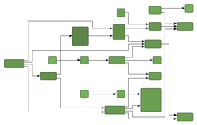
|
| Hierarchical layout with layout orientation left to right. |
| Maximal Duration | |
| API | void setMaximalDuration(long duration) |
| Description | Sets a (soft) time limit for IncrementalHierarchicLayouter. |
IncrementalHierarchicLayouter allows to control general drawing options like, e.g., edge routing styles or minimum distances between graph elements.
Options which affect edge routing:
| Orthogonal Edge Routing | |
| API | void setOrthogonallyRouted(boolean orthogonal) |
| Description | Enables/Disables orthogonal edge routing (default is disabled) |
| Backloop Routing | |
| API | void setBackloopRoutingEnabled(boolean backloopRoutingEnabled) |
| Description | Enables/Disables backloop routing (default is disabled) |
IncrementalHierarchicLayouter supports three edge routing styles:
The following figure shows the different routing styles side by side. Note that using the above setter method, only the former two styles can be configured. Octilinear edge routing can be enabled using a corresponding EdgeLayoutDescriptor, see also the section called “Related Classes”.
Figure 5.33. Edge routing styles determined by the EdgeLayoutDescriptor
|
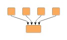
|
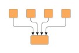
|
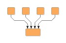
|
| Polyline edge routing. | Orthogonal edge routing (with rounded bends). | Octilinear edge routing. |
Example 5.25. Enabling orthogonal edge routing
// 'ihl' is of type y.layout.hierarchic.IncrementalHierarchicLayouter. // Switching IHL to orthogonal edge routing. ihl.setOrthogonallyRouted(true);
IncrementalHierarchicLayouter places the nodes in a way that reflects the main flow of a diagram, i.e. in a top-to-bottom layout most edges will connect to targets which are placed below their source nodes. However, it is not always possible to achieve this for all edges in a diagram. Edges which connect to targets which are located above their source nodes are referred to as "backloop edges". By default these edges exit their source nodes at the top border and enter their targets at the bottom to keep the paths short. This may reduce the readability of a hierarchical layout as shown in the left diagram of Figure 5.34, “Backloop Routing”.
Setting backloop routing enabled will force backloop edges to exit at the bottom and enter at the top of their source and target, respectively, emphasizing the main direction of the diagram. Backloop routing is enabled in the right diagram of Figure 5.34, “Backloop Routing”.
Options which affect node placement:
| Minimum Layer Distance | |
| API | void setMinimumLayerDistance(double minimumDistance) |
| Description | The minimum distance between adjacent layers |
| Node to Node Distance | |
| API | void setNodeToNodeDistance(double distance) |
| Description | The minimum distance between two nodes in the same layer |
| Edge to Edge Distance | |
| API | void setEdgeToEdgeDistance(double distance) |
| Description | The minimum distance between two edges in the same layer |
| Node to Edge Distance | |
| API | void setNodeToEdgeDistance(double distance) |
| Description | The minimum distance between a node and a non-adjacent edge in the same layer |
Figure 5.35, “Distance settings in a hierarchical layout” illustrates where the settings for the drawing options take effect in a diagram.
Note that the distance settings between edges and also between edges and nodes only take effect on edges that span at least one layer in the diagram. Also, keep in mind that all distances are only minimum distances, i.e., the layout algorithm may use larger distances than specified in order to achieve an aesthetic result.
Further drawing style options can be specified by means of the layout descriptor classes for nodes and edges. One instance of each class is held by IHL to store and retrieve default values for drawing style options, like, e.g., preferred minimum distances between graph elements.
IncrementalHierarchicLayouter provides access to the default
NodeLayoutDescriptor and EdgeLayoutDescriptor
and EdgeLayoutDescriptor instances:
instances:
NodeLayoutDescriptor getNodeLayoutDescriptor() |
|
| Description | Node-related layout options |
EdgeLayoutDescriptor getEdgeLayoutDescriptor() |
|
| Description | Edge-related layout options |
In addition to the instances held directly by IHL, layout descriptors can also be associated with single graph elements in order to specify individual settings for them. Setting individual descriptors for nodes or edges is done through data providers that are bound to the graph. See Related Classes.
Upon creation, IHL is in non-incremental layout mode by default, i.e., it recomputes the entire layout of a given graph. This is in accordance with the behavior of the other yFiles major layout algorithms. Note that the non-incremental hierarchical layout is also referred to as "layout from scratch." Example 5.26, “Switching to complete re-layout” shows how to explicitly switch IHL to non-incremental layout mode.
Example 5.26. Switching to complete re-layout
// 'ihl' is of type y.layout.hierarchic.IncrementalHierarchicLayouter. // Switching IHL to do a complete re-layout of a graph. ihl.setLayoutMode(IncrementalHierarchicLayouter.LAYOUT_MODE_FROM_SCRATCH);
In the general three-phase process to generate a hierarchical layout, the first phase, that assigns the nodes of a graph to different layers, ...
The second phase, which is responsible for finding a good ordering of the nodes in each layer, ...
IncrementalHierarchicLayouter assigns the nodes of a graph to separate layers using
a Layerer implementation.
Layers are ordered and, assuming a top-to-bottom orientation for the main flow,
are arranged vertically from top to bottom (see also Figure 5.30, “Layers in the hierarchical layout style”).
implementation.
Layers are ordered and, assuming a top-to-bottom orientation for the main flow,
are arranged vertically from top to bottom (see also Figure 5.30, “Layers in the hierarchical layout style”).
The layer order is a 1-based index for the layers that at the same time denotes the so-called rank of all nodes assigned to a layer. Note that the rank of a node is important in conjunction with some of the Layerer implementations.
The layering strategy in non-incremental layout mode can be set using the
setFromScratchLayeringStrategy(byte) method.
According to the layering strategy constant, the actual Layerer implementation is
chosen.
Internally, IHL also sets up any specific configuration of the Layerer if necessary.
method.
According to the layering strategy constant, the actual Layerer implementation is
chosen.
Internally, IHL also sets up any specific configuration of the Layerer if necessary.
The following layering strategy constants are available:
LAYERING_STRATEGY_HIERARCHICAL_TOPMOST |
|
| Description |
A simple hierarchical layering variant.
All nodes without incoming edges (indegree zero) will be assigned to the topmost
layer of the layout.
The number of separate layers will be as small as possible.
Uses TopologicalLayerer |
LAYERING_STRATEGY_HIERARCHICAL_OPTIMAL |
|
| Description |
An optimal hierarchical layering strategy.
The layer distance of an edge is the absolute difference between the layer numbers
(ranks) of its source and target node.
Layer assignment will be done in such a way that the overall sum of the layer distances
of all edges in the layout is minimal.
Uses WeightedLayerer |
LAYERING_STRATEGY_HIERARCHICAL_TIGHT_TREE |
|
| Description |
A good heuristic that approximates the layering done by "Hierarchical - Optimal."
Uses TopologicalLayerer |
LAYERING_STRATEGY_HIERARCHICAL_DOWNSHIFT |
|
| Description |
An even faster heuristic that approximates the ranking done by "Hierarchical - Optimal"
by down-shifting some nodes in the layering.
The quality is usually worse than the one produced by "Tight Tree Heuristic."
Uses TopologicalLayerer |
LAYERING_STRATEGY_BFS |
|
| Description |
Layering based on a breadth-first search (BFS).
All edges will span at most one layer in the resulting drawing.
Edges between nodes that belong to the same layer are possible.
To specify nodes that should be placed into the first layer, a data provider holding
such supplemental layout data can be bound to the graph.
The data provider is expected to be registered with the graph using key CORE_NODES
Uses BFSLayerer |
LAYERING_STRATEGY_FROM_SKETCH |
|
| Description |
Layer assignment strategy that uses the initial y coordinates of the nodes to determine
a layering.
It tries to find a layering that is similar to the one in the input graph.
When this layering strategy is used, the layout algorithm may place nodes in the
same layer, even though they are connected by an edge.
These inner layer edges are always routed in an orthogonal style.
Uses AsIsLayerer |
LAYERING_STRATEGY_USER_DEFINED |
|
| Description |
The ranks of the nodes will be given by the user.
To specify the ranks, a data provider holding such supplemental layout data must
be bound to the graph.
The data provider is expected to be registered with the graph using key
LAYER_ID_KEY
Uses GivenLayersLayerer |
Except when using one of the latter three layering strategies, the nodes of a graph are assigned to layers such that as much as possible edges of the graph will have the same overall orientation. With the "From Sketch" and "User-defined Layering" strategies (last and second-to-last strategy constants), the layering is prescribed by some external means and there cannot be much said about the direction of the edges.
Using either the "From Sketch" or "User-defined Layering" strategies, it is possible to specify the exact layering for all nodes of a graph. In cases where only a few nodes need to fulfill specific layering requirements, the constrained layer assignment scheme is ideally suited.
In a hierarchical layout, the ordering of the nodes within a layer determines the
number of edge crossings in the resulting layout.
By default, IHL uses class DefaultLayerSequencer for determining this node order.
for determining this node order.
The sequencing that DefaultLayerSequencer generates can be conveniently customized using the support for constrained node sequencing.
Upon creation, IHL is in non-incremental layout mode by default, i.e., it recomputes the entire layout of a given graph. The other layout mode, namely incremental layout, needs to be turned on explicitly.
Incremental layout is closely related to "layout from sketch," where a given arrangement of nodes is taken as the starting point for a layout calculation and also as a specification for the calculation's desired outcome. Compared to a complete re-layout of a graph, the main advantage of incremental layout is that distinct parts of a graph can be rearranged while the remainder of the graph, which defines the "sketch," is not, or only slightly, changed.
Carefully note that the layout algorithm may move graph elements that are part of the sketch in order to optimally insert any incremental graph elements. In other words, incremental layout does not guarantee that any non-incremental parts of a graph stay exactly as they were. However, they will keep their relative position.
Example 5.27, “Switching to incremental layout” shows how to switch IHL to incremental layout mode.
Example 5.27. Switching to incremental layout
// 'ihl' is of type y.layout.hierarchic.IncrementalHierarchicLayouter. // Switching IHL to do incremental layout of a graph. ihl.setLayoutMode(IncrementalHierarchicLayouter.LAYOUT_MODE_INCREMENTAL);
Additionally, any graph elements that shall be processed using incremental semantics need to be annotated appropriately so that the algorithm is able to discern them correctly from the parts that define the sketch. Annotation of the incremental parts of a graph is achieved by means of a data provider. See the section called “Specifying Hints”.
Incremental layout has two major use cases, which both involve "layout from sketch:"
Both these use cases are illustrated below.
Figure 5.36, “Sequence of incremental layouts” shows a sequence of incremental layouts generated by class IncrementalHierarchicLayouter. Starting with a given graph, new graph elements are inserted optimally into the existing drawing from the step before (which defines the sketch). Note the emphasis for newly added elements.
The second major use case for incremental layout, the optimization of distinct parts from an existing hierarchical layout is shown in Figure 5.37, “Incremental layout used for optimization”. There, an entire subgraph is calculated anew and optimally placed into the given drawing that defines the sketch.
Both use cases are handled by annotating the "new" graph elements by means of so-called
hint objects which are used by the algorithm during layout calculation in incremental
mode.
The hint object for a graph element that shall be processed using incremental semantics
is specified through a data provider that is bound to the graph.
The data provider is expected to be registered with the graph using key
INCREMENTAL_HINTS_DPKEY .
.
Calculation of incremental hierarchical layouts heavily relies on the services of a so-called "hint factory." A hint factory is responsible for creating hint objects for both nodes and edges. These objects are then used by the incremental layout algorithm to optimally:
When inserting nodes or routing edges according to their hint, nodes and edges from the graph that have no hint object associated retain their original relative order both within layers as well as from layer to layer.
Class IncrementalHierarchicLayouter has a getter method that returns a hint factory
object of type IncrementalHintsFactory .
Code that shows the usage of a hint factory is presented in Example 5.28, “Getting and using a hint factory”.
.
Code that shows the usage of a hint factory is presented in Example 5.28, “Getting and using a hint factory”.
Example 5.28. Getting and using a hint factory
// 'graph' is of type y.layout.LayoutGraph.
// Create the incremental layout.
IncrementalHierarchicLayouter ihl = new IncrementalHierarchicLayouter();
// Create a map to store the hints for the incremental layout mechanism.
DataMap hintMap = Maps.createHashedDataMap();
graph.addDataProvider(IncrementalHierarchicLayouter.INCREMENTAL_HINTS_DPKEY,
hintMap);
// Get the hint factory from the incremental layout algorithm.
IncrementalHintsFactory hintsFactory = ihl.createIncrementalHintsFactory();
// Get a NodeList with those nodes that should be processed using incremental
// layout semantics.
NodeList incNL = myGetIncrementalNodeList();
// Associate the incremental nodes with hints from the hint factory.
for (NodeCursor nc = incNL.nodes(); nc.ok(); nc.next()) {
hintMap.set(nc.node(), hintsFactory.createLayerIncrementallyHint(nc.node()));
}
// Now, set incremental mode and invoke layout calculation.
ihl.setLayoutMode(IncrementalHierarchicLayouter.LAYOUT_MODE_INCREMENTAL);
new BufferedLayouter(ihl).calcLayout(graph);
The following table lists the data provider look-up keys that are recognized by IHL in conjunction with incremental layout.
Table 5.24. Data provider look-up keys
| Key | Element Type | Value Type | Description |
|---|---|---|---|
| INCREMENTAL_HINTS_DPKEY |
Node, Edge | Object |
For each node or edge that shall be added incrementally a hint object that marks
the respective graph element to be inserted into the existing hierarchical layout
in an optimal manner.
The hint object is created by a hint factory, for example the one that is returned
by method
createIncrementalHintsFactory() |
The data provider that is registered using the look-up key INCREMENTAL_HINTS_DPKEY
holds data for both types of graph elements.
Hence, neither NodeMap nor EdgeMap
nor EdgeMap implementations can be used as the basis for this data provider.
implementations can be used as the basis for this data provider.
An alternative basis for the data provider would be, e.g., a DataMap as returned
by method createHashedDataMap() , or any
custom DataProvider
, or any
custom DataProvider implementation that is
not restricted to one type of graph element.
implementation that is
not restricted to one type of graph element.
IncrementalHierarchicLayouter supports constrained layer assignment for from-scratch layout mode as well as for incrementally inserted graph elements in incremental layout mode.
To this end, IHL makes available an implementation of interface LayerConstraintFactory that enables user-defined constrained layering.
Nodes can be restricted to be placed either
that enables user-defined constrained layering.
Nodes can be restricted to be placed either
The remaining nodes, that have no constraints defined, are processed using the layerer that is set with IHL.
Note that relative layer constraints in incremental layout mode can also be specified between nodes that belong to the sketch and nodes that shall be processed using incremental semantics. Relative constraints between nodes that both belong to the sketch are ignored.
Figure 5.38, “Constrained hierarchical layering” shows a resulting hierarchical layout where nodes with an absolute constraint specified for them are placed in the topmost layer (note the emphasis on these nodes). Normally, i.e., when no constraints are specified, these nodes are placed in the very center of the graph as can be observed in the original hierarchical layout.
Figure 5.38. Constrained hierarchical layering
|
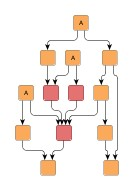
|
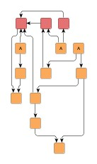
|
| Usual hierarchical layout (i.e. without taking constraints into account). | Resulting hierarchical layout where the constrained nodes are placed in the topmost layer. |
Example 5.29, “Creating the constraints factory” shows how the default constraints factory can be retrieved from IHL. Note that the constraints factory is specifically created for the given graph and has to be disposed of when it is no longer needed.
Example 5.29. Creating the constraints factory
// 'graph' is of type y.base.Graph. IncrementalHierarchicLayouter ihl = new IncrementalHierarchicLayouter(); // Create a constraint factory for the graph. LayerConstraintFactory lcf = ihl.createLayerConstraintFactory(graph);
The constraint factory provides the following methods to define both absolute and relative layer constraints for nodes.
LayerConstraint addPlaceNodeAtTopConstraint(Object n) |
|
| Description | Absolute constraints. |
LayerConstraint addPlaceNodeInSameLayerConstraint(Object reference, Object sameLayer) |
|
| Description | Constraints relative to a given reference node from the same graph instance. |
The LayerConstraint instance that is returned by each of these methods can be used to specify the priority
value of the respective constraint.
A constraint's priority is a positive integral value that is used to resolve conflicting
constraint definitions by not considering low-priority constraints.
instance that is returned by each of these methods can be used to specify the priority
value of the respective constraint.
A constraint's priority is a positive integral value that is used to resolve conflicting
constraint definitions by not considering low-priority constraints.
Using the services of the default LayerConstraintFactory implementation in a hierarchical layout and defining constraints for the nodes of a graph is demonstrated in the tutorial demo application LayerConstraintsDemo.java.
Constrained node sequencing enables user-defined ordering of nodes within a given layer. Nodes can be restricted to be placed either
Any remaining nodes that have no constraints defined are placed by the algorithm at optimal positions within their respective layer. In particular, this means that for a set of nodes {A, B, C} within a layer where relative constraints specify a sequence like so: {A before B, B before C}, other nodes from the layer might still intermit the sequence in the resulting layout.
Figure 5.39, “Constrained node sequencing” shows resulting hierarchical layouts where nodes are placed according to different sequence constraints.
The first before/after pair shows a result where nodes with an absolute constraint specified for them are placed at the beginning of their respective layers (note the emphasis on these nodes). Normally, i.e., when no constraints are specified, these nodes are placed in the very center of the graph as can be observed in the original hierarchical layout.
The other pair depicts the result of using relative constraints to achieve a specified sequence for some nodes within their layer.
Figure 5.39. Constrained node sequencing
|
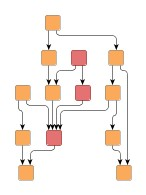
|
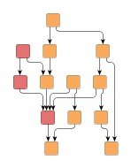
|
| Usual hierarchical layout (i.e. without taking constraints into account). | Resulting hierarchical layout where the constrained nodes are placed at the beginning of their respective layers. |
|
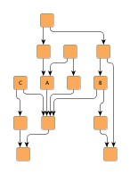
|
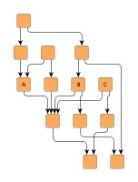
|
| Usual hierarchical layout (i.e. without taking constraints into account). | Resulting hierarchical layout where the constrained nodes are placed lexicographically ordered within their layer. |
Class IncrementalHierarchicLayouter makes available an implementation of interface
SequenceConstraintFactory that conveniently allows to define both absolute and relative node order constraints.
Example 5.30, “Creating the constraints factory” shows how the default constraints
factory can be retrieved from IHL.
Note that the constraints factory is specifically created for the given graph and
has to be disposed of when it is no longer needed.
that conveniently allows to define both absolute and relative node order constraints.
Example 5.30, “Creating the constraints factory” shows how the default constraints
factory can be retrieved from IHL.
Note that the constraints factory is specifically created for the given graph and
has to be disposed of when it is no longer needed.
Example 5.30. Creating the constraints factory
// 'graph' is of type y.layout.LayoutGraph. IncrementalHierarchicLayouter ihl = new IncrementalHierarchicLayouter(); // Create a constraint factory for the graph. SequenceConstraintFactory scf = ihl.createSequenceConstraintFactory(graph);
The SequenceConstraint factory provides the following methods to specify node order constraints. Using the services of the default SequenceConstraintFactory implementation in a hierarchical layout and defining constraints for the nodes of a graph is demonstrated in the tutorial demo application SequenceConstraintsDemo.java.
void addPlaceNodeAtHeadConstraint(Object n) |
|
| Description | Absolute constraints |
void addPlaceNodeBeforeConstraint(Object reference, Object before) |
|
| Description | Constraints relative to a given reference node |
IncrementalHierarchicLayouter provides support for placing nodes on grid coordinates. Grid placement is enabled by means of the following method, which at the same time also determines the spacing between grid coordinates:
void setGridSpacing(double gridSpacing) |
|
| Description | Setting a value strictly greater than 0.0 enables grid placement and determines the distance between grid coordinates. The value is used both in vertical and in horizontal direction. |
The graph's edges will also be routed on the grid, i.e. their bends are placed on grid coordinates, if possible. Placing bends on the grid isn't always possible depending on other configurations, for example:
The following figures show the results of grid placement with the different edge routing styles supported by IncrementalHierarchicLayouter. Observe how the center of each node is placed on grid coordinates and edge paths run on grid lines where possible. All figures use a grid spacing of 10.0 [pixel].
Figure 5.40. Edge routing styles with enabled grid placement
|
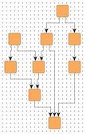
|
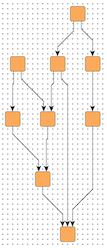
|
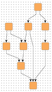
|
| Orthogonal edge routing, ... | octilinear, ... | and polyline edge routing style. |
Different grid spacing values can be used to achieve an effect on a graph similar to a scaling transformation:
Figure 5.41. Resulting grid placements of the same graph with different grid spacings
|
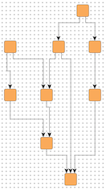
|
|
| Grid spacing = 10.0 | Grid spacing = 30.0 |
By default, nodes will be placed on the grid with their center. However, it is possible to define an alternative reference point for each node with which it is placed instead. For example, if the upper left corner of a node should be on grid coordinates.
With the following method of class NodeLayoutDescriptor the reference point for a node can be set:
void setGridReference(YPoint referencePoint) |
|
| Description | Determines a node's reference point, which shall be placed on grid coordinates. By default, a node's center is used as its reference point. |
Note that non-empty group nodes will always be placed such that their borders are on grid lines. They are not affected by reference point configuration.
When using the "Layer Alignment" property of class NodeLayoutDescriptor to top-align (bottom-align) all nodes of a layer, also adjust the reference points of the nodes to their top (bottom) for best results in conjunction with grid placement.
To handle the edges of a graph, IncrementalHierarchicLayouter supports different port assignment policies in conjunction with grid placement. The policies determine how the edges at each side of a node will be distributed along the respective side.
The setPortAssignment(byte) method in class NodeLayoutDescriptor sets the port assignment policy for a given
node.
The following policy constants are available:
method in class NodeLayoutDescriptor sets the port assignment policy for a given
node.
The following policy constants are available:
PORT_ASSIGNMENT_DEFAULT |
|
| Description | Distributes the edges on each node side evenly without considering the grid. This is the default setting that is also used when no grid is specified. |
PORT_ASSIGNMENT_ON_GRID |
|
| Description |
Distributes the edges on each node side on grid lines. If there are less grid lines than there are edges at a side, multiple edges may connect at the same location. When the node is placed on the grid with a reference point on its border, it is possible that there is no grid line available at the node's side. In that case, all edges at that node side will be centered at the side. |
PORT_ASSIGNMENT_ON_SUBGRID |
|
| Description | Distributes the edges on each node side on grid lines. If there are less grid lines than there are edges at a side, the grid will be subdivided until there is at least one grid line per edge available. |
The following figures show the different port assignment policies with the same graph:
Figure 5.42. Different port assignment policies with grid placement
|
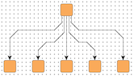
|
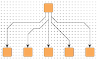
|
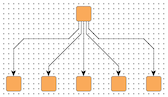
|
| PORT_ASSIGNMENT_DEFAULT | PORT_ASSIGNMENT_ON_GRID | PORT_ASSIGNMENT_ON_SUBGRID |
See also the description of the NodeLayoutDescriptor class in Related Classes which provides the methods for setting individual reference points and configuring port assignment policies.
The grid placement support of IncrementalHierarchicLayouter does not work well with exact layer coordinate hints or exact sequence coordinate hints.
IncrementalHierarchicLayouter provides functionality that allows to align nodes that are part of so-called critical paths. This feature can be used to emphasize relevant edge paths in a diagram.
Figure 5.43. Alignment of nodes of a critical path
|
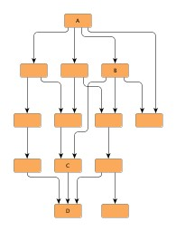
|
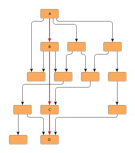
|
| Usual hierarchical layout (i.e. without taking critical paths into account). | Resulting hierarchical layout where the nodes of a critical path are aligned. |
A critical path in a graph is unambiguously defined by its edges.
By means of a data provider that is bound to the graph using the look-up key CRITICAL_EDGE_DPKEY ,
each edge of a critical path is assigned a positive, non-zero integral value.
The value denotes that an edge is part of a critical path.
It also serves to define the priority of the edge, respectively the priority of
the critical path itself, if edges from different critical paths connect to a common
node.
Then, the edge with the highest priority determines the actual nodes to align.
,
each edge of a critical path is assigned a positive, non-zero integral value.
The value denotes that an edge is part of a critical path.
It also serves to define the priority of the edge, respectively the priority of
the critical path itself, if edges from different critical paths connect to a common
node.
Then, the edge with the highest priority determines the actual nodes to align.
Tutorial demo application CriticalPathDemo.java presents the necessary setup for emphasizing critical paths.
The following table lists the data provider look-up keys that are recognized by IHL in conjunction with alignment of nodes of critical paths.
Table 5.25. Data provider look-up keys
| Key | Element Type | Value Type | Description |
|---|---|---|---|
| CRITICAL_EDGE_DPKEY |
Edge | int | For each edge of a critical path a positive, non-zero integral value that indicates the priority of the edge/the critical path. |
Class IncrementalHierarchicLayouter supports:
Except the top two, all of these advanced features are observed as soon as there are data providers registered with a graph using appropriate look-up keys.
Integrated labeling is one of the two scenarios for placing the labels of a graph. It means the support provided by IHL for finding optimal placements for edge labels such that there are no overlaps of edge labels with each other or with graph elements.
Integrated labeling can be enabled or disabled using the following setter method:
boolean isIntegratedEdgeLabelingEnabled() |
|
| Description | Determines whether integrated labeling is enabled. |
The before/after pair in Figure 5.44, “Integrated edge labeling” shows the result of a hierarchical layout with integrated edge labeling enabled.
Figure 5.44. Integrated edge labeling
 |
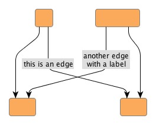
|
| Original graph with edge labels. | Resulting hierarchical layout where the edge labels have been placed optimally. |
Optimal label placement with integrated labeling can be achieved using FreeEdgeLabelModel as the label model for the edges.
As explained in the section called “Label Models”, this edge label model is ideally
suited in combination with integrated labeling and yields the best match for a label
location that is computed by IHL.
as the label model for the edges.
As explained in the section called “Label Models”, this edge label model is ideally
suited in combination with integrated labeling and yields the best match for a label
location that is computed by IHL.
IncrementalHierarchicLayouter provides support for node label-aware hierarchical layout. Node labels do not need to be placed, but instead their size needs to be considered for the placement, respectively the routing, of adjacent graph elements. Taking node labels into consideration during layout calculation guarantees that they will not overlap nodes in the diagram.
| Consider Node Labels | |
| API | void setConsiderNodeLabelsEnabled(boolean enabled) |
| Description | Enables node label-aware layout calculation. |
See also the description of the NodeLayoutDescriptor class in Related Classes which provides the support for node label handling.
IHL supports both weak port constraints as well as strong port constraints that are specified for the edges of a graph (more precisely, the edge ends). The setup of port constraints is presented in the section called “Port Constraints”.
Using weak port constraints for the ends of an edge, it is possible to specify at which side of the source node or target node, respectively, an edge path must connect. Figure 5.45, “Constraint on which side edges should connect to nodes” shows the resulting hierarchical layout of a graph where some edges are set up having weak port constraints.
Figure 5.45. Constraint on which side edges should connect to nodes
|
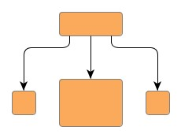
|
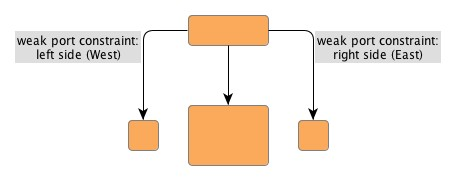
|
| Usual hierarchical layout (i.e. without taking port constraints into account). | Resulting hierarchical layout with weak port constraints. |
Using strong port constraints, it is possible to specify the side of the node at which an edge must connect, and additionally also the exact position of the port. Figure 5.46, “Constraint at which exact points edges should connect to nodes” shows the resulting hierarchical layout of a graph where some edges are set up having strong port constraints.
Figure 5.46. Constraint at which exact points edges should connect to nodes
|
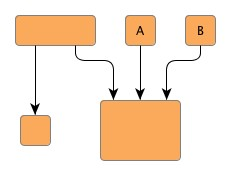
|
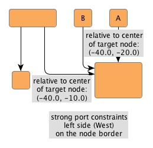
|
| Usual hierarchical layout (i.e. without taking port constraints into account). | Resulting hierarchical layout with strong port constraints. |
Carefully observe how the nodes A and B change their position in the resulting hierarchical layout from the figure above. This is due to the strong port constraints specified for the edge ends at the common target node, which would result in an edge crossing with the original node order.
Both weak port constraints and strong port constraints can be mixed easily in the drawing.
The following table lists the data provider look-up keys that are recognized by IHL in conjunction with port constraints.
Table 5.26. Data provider look-up keys
| Key | Element Type | Value Type | Description |
|---|---|---|---|
| SOURCE_PORT_CONSTRAINT_KEY |
Edge | PortConstraint | For each edge a PortConstraint object encoding its source end's port constraint. |
| TARGET_PORT_CONSTRAINT_KEY |
Edge | PortConstraint | For each edge a PortConstraint object encoding its target end's port constraint. |
In addition to the support provided for port constraints, IHL also supports the concept of port candidates. Both aspects, i.e., matching port candidates as well as modeling enhanced port constraints are supported.
For the matching of port candidates, the set of allowed anchor locations for
edge ends at the nodes of a graph are retrieved from a data provider that is
bound to the graph using the look-up key
NODE_DP_KEY .
The subset of desired anchor locations where the source ports and target ports
of edges like to connect to are retrieved from data providers that are bound to
the graph using the look-up keys
SOURCE_PCLIST_DPKEY
.
The subset of desired anchor locations where the source ports and target ports
of edges like to connect to are retrieved from data providers that are bound to
the graph using the look-up keys
SOURCE_PCLIST_DPKEY and
TARGET_PCLIST_DPKEY
and
TARGET_PCLIST_DPKEY ,
respectively.
,
respectively.
The example in Figure 5.47, “Using port candidates to control connection points” demonstrates the use of port candidates to distribute edges at defined connection points: one port candidate at each corner of the diamond node allows one edge to connect. Additional candidates at the top and bottom allow edges to connect at these points when all other candidates are already occupied. These additional candidates are associated with a higher cost to make sure they will be only used after all other candidates are occupied.
See the section called “Port Candidates” for a detailed description of the port candidates concept.
Figure 5.47. Using port candidates to control connection points
 |
 |
 |
| Incoming edges connect at the top, the first outgoing edge at the bottom... | ... more outgoing edges occupy the right and left corners... | ... when all corners are occupied, the additional edges connect at the bottom. |
For modeling enhanced port constraints, the set of possible port candidates for
the edges of a graph are retrieved from data providers that are bound to the
graph using the look-up keys
SOURCE_PCLIST_DPKEY and
TARGET_PCLIST_DPKEY
and
TARGET_PCLIST_DPKEY ,
respectively.
,
respectively.
The following table lists the data provider look-up keys that are recognized by IHL in conjunction with port candidates.
Table 5.27. Data provider look-up keys
| Key | Element Type | Value Type | Description |
|---|---|---|---|
| NODE_DP_KEY |
Node | PortCandidateSet | For each node a PortCandidateSet object encoding the set of allowed anchor locations for edges. |
| SOURCE_PCLIST_DPKEY |
Edge | Collection | For each edge a java.util.Collection of PortCandidate objects that encode the subset of desired anchor locations where the source port likes to connect to. |
| TARGET_PCLIST_DPKEY |
Edge | Collection | For each edge a java.util.Collection of PortCandidate objects that encode the subset of desired anchor locations where the target port likes to connect to. |
Incremental hierarchical layout supports the notion of grouping together multiple edge ends to be anchored at the same location. This can be specified for both source ends and target ends. The general setup for edge groups is described in the section called “Edge/Port Grouping (Bus-Style Edge Routing)”.
Edges that belong to the same group at a specific end will additionally be routed in bus-style, i.e., if multiple edges start or end at nodes in the same layer and belong to the same group, even if they do not share the same node at their ends, they will be merged together in a bus structure in that layer.
IncrementalHierarchicLayouter supports both automatic and custom edge grouping.
Automatic edge grouping is disabled by default. It can be enabled using the following method:
void setAutomaticEdgeGroupingEnabled(boolean automaticEdgeGroupingEnabled) |
|
| Description | Enables/Disables automatic edge grouping |
Automatic edge grouping tries to group as many edges as possible, without changing the semantic of the graph. Edges are grouped either at a common source node or at a common target node. They won't be grouped, if grouping would lead to ambiguous paths. The effect of automatic edge grouping is shown in Figure 5.48, “Automatic Edge Grouping”. Note that edges with a common source are grouped as well as edges with a common target. Also note that the outgoing edges at node B are not grouped, because grouping at this node would mock a connection between A and D.
Figure 5.48. Automatic Edge Grouping
|
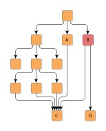
|
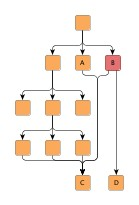
|
| Automatic edge grouping disabled. | Automatic edge grouping enabled. |
Edges are only grouped at their source (target) node if they do not have a port constraint/port candidates at this node. Furthermore, edges cannot be grouped at a node with specified port candidates. If automatic edge grouping is enabled, user specified edge groups are ignored.
If more flexibility is needed, edges can be grouped by specifying edge groups using data providers as described in the section called “Edge/Port Grouping (Bus-Style Edge Routing)”.
The general rule describing how bus structures are created can be summarized as follows: edge paths are merged from both sides, source and target, beginning as close to the respective edge ends as possible. From this rule, the following consequences arise:
From this rule it is also clear that edges being grouped at both ends will result in edge routings where the paths are merged to the maximum extent possible.
Table 5.28, “Edge group configurations and resulting bus-style edge routings” presents some edge routing results (in the figures to the left) and describes their actual source and target group setup. Note that the figures to the right depict the edge routing that results when both the edges are reversed and the source and target groups are exchanged.
Table 5.28. Edge group configurations and resulting bus-style edge routings
| Figure | Description | Figure |
|---|---|---|
|
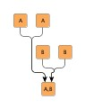
|
Edges starting at "A" nodes are grouped at their source side using a common "A" ID (for example). Likewise, edges starting at "B" nodes are grouped at their source side using a common "B" ID. Additionally, at their target side the edges are grouped such that all "A" edges share a common ID and all "B" edges share a common ID. |
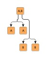
|
|
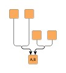
|
Edges starting at the upper nodes are grouped at their target side using a common "A" ID (for example). Likewise, edges starting at the middle nodes are grouped at their target side using a common "B" ID. |
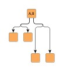
|
|
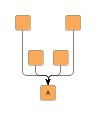
|
All edges are grouped at their target side using a common ID. |
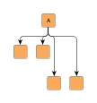
|
|
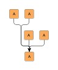
|
All edges are grouped at their source side using a common ID. Additionally, at their target side the edges are also grouped such that they share a common ID. |
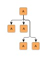
|
| Edges are grouped at their source side using a common ID. |
The following table lists the data provider look-up keys that are recognized by IHL in conjunction with edge/port grouping (bus-style edge routing).
Table 5.29. Data provider look-up keys
| Key | Element Type | Value Type | Description |
|---|---|---|---|
| SOURCE_GROUPID_KEY |
Edge | Object | For each edge an arbitrary Object indicating the group its source end is affiliated with. |
| TARGET_GROUPID_KEY |
Edge | Object | For each edge an arbitrary Object indicating the group its target end is affiliated with. |
IncrementalHierarchicLayouter by default supports node halos as soon as they are declared. During layout calculation, it takes any specified additional paddings around nodes into consideration and keeps the areas clear of other graph elements. The labels of a node and its adjacent edge segments are not affected and can still be placed inside or cross the node's halo.
The following table lists the data provider look-up keys that are recognized by IncrementalHierarchicLayouter in conjunction with node halo support.
Table 5.30. Data provider look-up keys
| Key | Element Type | Value Type | Description |
|---|---|---|---|
| NODE_HALO_DPKEY |
Node | NodeHalo |
A NodeHalo |
IncrementalHierarchicLayouter supports different layer assignment policies for graphs with grouped nodes. The layering for both incremental as well as non-incremental layout can be determined in either of two ways:
Figure 5.49, “Flat vs. recursive layer assignment” compares the layer assignment policies. When layer assignment is done flat, the group nodes of a graph and their adjacent edges are ignored. In particular, this means that the layering of grouped nodes can be influenced by nodes outside of the group node. In constrast, when using recursive layer assignment, grouped nodes are processed without interference from nodes outside of their group node.
Figure 5.49. Flat vs. recursive layer assignment
| Flat layer assignment policy where group nodes and their adjacent edges are ignored. | Recursive layer assignment policy. | Recursive layer assignment policy with compaction enabled. |
Recursive processing of the grouped nodes is the default behavior. Example 5.31, “Setting up flat layer assignment” shows how to set up flat layer assignment with IncrementalHierarchicLayouter.
Example 5.31. Setting up flat layer assignment
// Set up IHL for grouped graphs. IncrementalHierarchicLayouter ihl = new IncrementalHierarchicLayouter(); ihl.setRecursiveGroupLayeringEnabled(false);
Recursive layer assignment optionally uses a compaction step where empty layers next to group nodes are filled with nodes from layers below these group nodes. When compaction is disabled, an alignment policy is used to specify where "ordinary" nodes that are in a layer with group nodes are placed relative to these group nodes. These options can be configured using the following methods:
void setGroupCompactionEnabled(boolean groupCompactionEnabled) |
|
| Description | Layer compaction |
void setGroupAlignmentPolicy(byte groupAlignmentPolicy) |
|
| Description | Group node-relative alignment policy |
When calculating a layout for a grouped graph, IncrementalHierarchicLayouter also
supports minimum size constraints for group nodes.
A minimum size constraint can be conveniently used in order for the group node to
accommodate for the size of its label.
If a data provider is registered with the graph using the look-up key
MINIMUM_NODE_SIZE_DPKEY ,
any minimum size constraints for group nodes held by this data provider are respected
by default.
,
any minimum size constraints for group nodes held by this data provider are respected
by default.
IncrementalHierarchicLayouter's support for grouped graphs currently does not include the following features for edge ends that directly connect to group nodes: strong port constraints, strong (fixed) port candidates, and edge/port grouping (bus-style edge routing).
IncrementalHierarchicLayouter's support for incrementally calculating layouts of grouped graphs enables smooth transitions when realizing collapsing and expanding of group nodes. Figure 5.50, “Incremental hierarchical layout when group nodes are collapsed and expanded” presents the results of both these operations. The resulting folder node and group node, respectively, is incrementally inserted into the existing layout.
Figure 5.50. Incremental hierarchical layout when group nodes are collapsed and expanded
 |
||
| Original hierarchical layout with group nodes. | Collapsed group node incrementally inserted into the layout. | Previously collapsed group node expanded and incrementally inserted. |
Incremental hierarchical layout of graphs with grouped nodes is demonstrated in the tutorial demo application IncrementalHierarchicGroupDemo.java.
The following table lists the data provider look-up keys that are recognized by IHL in conjunction with grouped graphs.
Table 5.31. Data provider look-up keys
| Key | Element Type | Value Type | Description |
|---|---|---|---|
| GROUP_DPKEY |
Node | boolean | For each node a boolean value indicating whether it is a group node or not. |
| NODE_ID_DPKEY |
Node | Object | For each node an Object that serves as a unique ID. |
| PARENT_NODE_ID_DPKEY |
Node | Object | For each node an Object indicating the group node it belongs to. The Object matches the unique ID of a group node that is in the same graph. |
| MINIMUM_NODE_SIZE_DPKEY |
Node | YDimension |
For each group node a YDimension |
Setup of a grouped graph's hierarchy of nodes and using the grouping keys (GROUP_DPKEY, NODE_ID_DPKEY, and PARENT_NODE_ID_DPKEY) is described in detail in the section called “Setup for Layout”.
Classes NodeLayoutDescriptor and EdgeLayoutDescriptor
and EdgeLayoutDescriptor (together with class RoutingStyle
(together with class RoutingStyle )
can be used to configure node-related and edge-related layout and drawing options.
For example, the following options can be set for nodes and edges, respectively:
)
can be used to configure node-related and edge-related layout and drawing options.
For example, the following options can be set for nodes and edges, respectively:
The NodeLayoutDescriptor provides a number of options
for node configuration:
provides a number of options
for node configuration:
| Layer Alignment | |
| API | void setLayerAlignment(double alignment) |
| Description | Determines the alignment of a node within its layer. Values can be set from 0.0 (top) to 1.0 (bottom). See also Figure 5.51, “Node-related layout and drawing options”. |
| Minimum Layer Height | |
| API | void setMinimumLayerHeight(double height) |
| Description | Determines the minimum height of the layer this node is assigned to. See also Figure 5.51, “Node-related layout and drawing options”. |
| Minimum Distance from Obstacles | |
| API | void setMinimumDistance(double distance) |
| Description | Determines the preferred minimum distance. |
| Node Label Mode | |
| API | void setNodeLabelMode(byte mode) |
| Description | Determines the consideration of node labels during the layout. See also Figure 5.52, “Node label modes”. |
For grid placement support in particular, these options are available:
| Grid Reference Point | |
| API | void setGridReference(YPoint referencePoint) |
| Description | Determines a node's reference point, which shall be placed on grid coordinates. By default, a node's center is used as its reference point. |
| Port Assignment Policy | |
| API | void setPortAssignment(byte portAssignment) |
| Description | Sets the port assignment policy for a given node. The policy determines how the edges at each side of the node will be distributed along the respective side. |
A NodeLayoutDescriptor instance can be specified individually for single nodes by
means of a data provider that is bound to the graph.
The data provider is expected to be registered with the graph using key
NODE_LAYOUT_DESCRIPTOR_DPKEY .
In the absence of an individual descriptor for a node, the default NodeLayoutDescriptor
instance that is registered with IncrementalHierarchicLayouter will be used.
.
In the absence of an individual descriptor for a node, the default NodeLayoutDescriptor
instance that is registered with IncrementalHierarchicLayouter will be used.
Figure 5.51, “Node-related layout and drawing options” illustrates layer-related options from NodeLayoutDescriptor. In the left figure, the second and third node are aligned topmost in their layer. In the right figure, the same nodes are still aligned topmost, however the minimum layer height has been set to a value larger than the biggest node.
Figure 5.51. Node-related layout and drawing options
| Layer alignment; the second and third node are aligned topmost. | Same layer alignment in conjunction with a minimum layer height that is larger than the biggest node. |
Figure 5.52, “Node label modes” illustrates the results for different node label modes when calculating a hierarchical layout. The figures show, from left to right, a long node label and how it is considered for the layout using different settings available with NodeLayoutDescriptor. Note that the second figure shows the result with NodeLayoutDescriptor's default setting.
Figure 5.52. Node label modes
|
Node labels never considered |
considered |
...considered for self-loops |
The edge layout can be configured using class
EdgeLayoutDescriptor together with class RoutingStyle:
together with class RoutingStyle:
| Routing Style | |
| API | void setRoutingStyle(RoutingStyle routingStyle) |
| Description | Configures the routing style for different edge types. |
| Minimum Length of First and Last Segment | |
| API | void setMinimumFirstSegmentLength(double length) |
| Description | Determine the minimum length of the first (at the source) and last (at the target) edge segment. |
| Minimum Length and Slope (Polyline Routing) | |
| API | void setMinimumLength(double length) |
| Description | Determine the minimum length and the minimum slope of the edge's mid segments in a vertical layout. Applies only to polyline routing style. |
| Minimum Distance to Obstacles | |
| API | void setMinimumDistance(double distance) |
| Description | Determines the preferred minimum distance to obstacles. |
An EdgeLayoutDescriptor instance can be specified individually for single edges
by means of a data provider that is bound to the graph.
The data provider is expected to be registered with the graph using key
EDGE_LAYOUT_DESCRIPTOR_DPKEY .
In the absence of an individual descriptor for an edge, the default EdgeLayoutDescriptor
instance that is registered with IncrementalHierarchicLayouter will be used.
.
In the absence of an individual descriptor for an edge, the default EdgeLayoutDescriptor
instance that is registered with IncrementalHierarchicLayouter will be used.
In conjunction with EdgeLayoutDescriptor, class RoutingStyle enables configuration of different edge routing styles for different edge types
like backloop edges, same-layer edges, self-loops, and edges in edge groups.
By default, the routing style that is given at creation time of a RoutingStyle instance
is set uniformly for all edge types.
The following methods can be used to set different styles:
enables configuration of different edge routing styles for different edge types
like backloop edges, same-layer edges, self-loops, and edges in edge groups.
By default, the routing style that is given at creation time of a RoutingStyle instance
is set uniformly for all edge types.
The following methods can be used to set different styles:
void setBackloopRoutingStyle(byte backloopRoutingStyle) |
|
| Description | Edge routing style configuration for different edge types. |
Figure 5.53, “Edge routing options” illustrates routing style-related options from EdgeLayoutDescriptor. The figures show the different routing style options available.
Figure 5.53. Edge routing options
| Polyline edge routing. | Orthogonal edge routing (with rounded bends). | Octilinear edge routing. |
Figure 5.54, “Edge-related layout and drawing options” illustrates different minimum lengths settings for the first and last edge segments when calculating a hierarchical layout.
Figure 5.54. Edge-related layout and drawing options
| First and last segment length: 0px | First and last segment length: 15px |
Polyline edge routing style is the default setting that is used by the default EdgeLayoutDescriptor for all edge types.
The following table lists the data provider look-up keys that are recognized by IHL in conjunction with individual layout settings for nodes and edges.
Table 5.32. Data provider look-up keys
| Key | Element Type | Value Type | Description |
|---|---|---|---|
| NODE_LAYOUT_DESCRIPTOR_DPKEY |
Node | NodeLayoutDescriptor |
For each node a NodeLayoutDescriptor |
| EDGE_LAYOUT_DESCRIPTOR_DPKEY |
Edge | EdgeLayoutDescriptor |
For each edge an EdgeLayoutDescriptor |
Class SimplexNodePlacer is the default NodePlacer implementation that is used by IHL during the drawing
phase.
It can be retrieved via the getNodePlacer()
is the default NodePlacer implementation that is used by IHL during the drawing
phase.
It can be retrieved via the getNodePlacer() method.
method.
Most notably, SimplexNodePlacer provides support for symmetric placement of nodes where possible.
boolean isBaryCenterModeEnabled() |
|
| Description | Enables drawing phase support for symmetric placement of nodes. |
SimplexNodePlacer also provides an optional post-processing step that tries to remove bends from edges in order to straighten their paths.
boolean isEdgeStraighteningOptimizationEnabled() |
|
| Description | Enables drawing phase support for optimized edge paths. |
Additionally, it makes available drawing phase options that can be used in conjunction with grouped graphs.
int getGroupCompactionStrategy() |
|
| Description | Allows to control whether the horizontal space occupied by group node content should be compacted. |
The following setter can be used to place adjacent edge labels in a compact, stacked style:
void setLabelCompactionEnabled(boolean enabled) |
|
| Description | Determines whether adjacent edge labels shall be placed in a compact manner. |
Table 5.33, “Layout Stages” lists layout stages that can be used to enhance the layout process of class IncrementalHierarchicLayouter. Class IncrementalHierarchicLayoutModule.java demonstrates how to set up and use these layout stages in conjunction with IHL.
Table 5.33. Layout Stages
| Classname | Description |
|---|---|
| TopLevelGroupToSwimlaneStage |
Enables convenient swimlane setup using plain group nodes instead of a partition grid. |
TopLevelGroupToSwimlaneStage is an alternative to explicitly setting up swimlanes using a partition grid as described in the section called “Swimlane Layout”. It presents a convenient means for specifying the setup for a swimlane layout using plain group nodes.
Each top-level group node is interpreted as holding the contents for one swimlane, i.e., all nodes within such a group node are assigned to the same lane when calculating the swimlane layout. Naturally, this approach supports only swimlane setups where neither group nodes nor folder nodes stretch across multiple lanes.
Usage of this layout stage can be observed in IncrementalHierarchicLayoutModule.java.
IncrementalHierarchicLayouter provides support for so-called swimlane layout. This type of layout uses the notion of adjacent lanes into which nodes are placed. The lanes are oriented with the general layout direction, i.e., perpendicular to the layers of the hierarchical layout. Each normal node of the graph is placed into a single lane, group nodes in a grouped graph are allowed to stretch across multiple lanes such that they encompass all their contained nodes.
Figure 5.55, “Swimlanes” shows a resulting swimlane layout as calculated by IncrementalHierarchicLayouter where the layout direction is from left to right. The visual representation of the swimlanes is rendered by a TableGroupNodeRealizer.
Swimlane layout is a special case in the more general concept of so-called partitioned layout support. The lanes present a one-dimensional partition within which the nodes of a diagram are organized. The setup for partitioned layout is presented in the section called “Partition Grid”.
IncrementalHierarchicLayouter's support for partitioned layout covers the configuration options below for normal nodes and group nodes. Depending on the kind of partition cell ID that is associated with a normal node, the layout algorithm will place the normal node:
Depending on the kind of the partition cell ID that is associated with a group node, the layout algorithm will place the group node such that:
When using the "Single cell" and "Range of cells" partition cell ID configurations for a group node, all its contained nodes need to have corresponding partition cell ID configurations (i.e., the cell ID of the group node isn't automatically assigned to its content).
The following table lists the data provider look-up keys that are recognized by IHL in conjunction with swimlane/partitioned layout.
Table 5.34. Data provider look-up keys
| Key | Element Type | Value Type | Description |
|---|---|---|---|
| PARTITION_GRID_DPKEY |
Graph | PartitionGrid |
A PartitionGrid |
| PARTITION_CELL_DPKEY |
Node | PartitionCellId |
For each node a PartitionCellId |
Using both the incremental as well as the non-incremental layout functionality of
class IncrementalHierarchicLayouter is presented in detail in the following tutorial demo applications:
is presented in detail in the following tutorial demo applications:
Swimlane layout in particular is demonstrated in the following tutorial demo applications:
Layout module IncrementalHierarchicLayoutModule.java shows configuration aspects of class IncrementalHierarchicLayouter and can also be used to interactively explore the effects of different settings.
Class IncrementalHierarchicLayouter knows a number of data provider keys which are used to retrieve supplemental layout data for a graph's elements. The data is bound to the graph by means of a data provider which is registered using a given look-up key. Table 5.35, “Data provider look-up keys” lists all look-up keys that IncrementalHierarchicLayouter tests during the layout process in order to query supplemental data.
Binding supplemental layout data to a graph is described in the section called “Providing Supplemental Layout Data”.
Table 5.35. Data provider look-up keys
| Key | Element Type | Value Type | Description |
|---|---|---|---|
| INCREMENTAL_HINTS_DPKEY |
Node, Edge | Object |
For each incrementally added node or edge a hint object that marks the
respective graph element to be inserted into the hierarchical layout in an
optimal manner.
The hint object is created by a hint factory, like, e.g., the hint factory
that is returned by method
createIncrementalHintsFactory() |
| NODE_LAYOUT_DESCRIPTOR_DPKEY |
Node | NodeLayoutDescriptor |
For each node a
NodeLayoutDescriptor |
| EDGE_LAYOUT_DESCRIPTOR_DPKEY |
Edge | EdgeLayoutDescriptor |
For each edge an
EdgeLayoutDescriptor |
| PARTITION_GRID_DPKEY |
Graph | PartitionGrid |
A PartitionGrid |
| PARTITION_CELL_DPKEY |
Node | PartitionCellId |
For each node a PartitionCellId |
| SOURCE_GROUPID_KEY |
Edge | Object | For each edge an arbitrary Object indicating the group its source end is affiliated with. |
| TARGET_GROUPID_KEY |
Edge | Object | For each edge an arbitrary Object indicating the group its target end is affiliated with. |
| SOURCE_PORT_CONSTRAINT_KEY |
Edge | PortConstraint | For each edge a PortConstraint object encoding its source end's port constraint. |
| TARGET_PORT_CONSTRAINT_KEY |
Edge | PortConstraint | For each edge a PortConstraint object encoding its target end's port constraint. |
| NODE_DP_KEY |
Node | PortCandidateSet | For each node a PortCandidateSet object encoding the set of allowed anchor locations for edges. |
| SOURCE_PCLIST_DPKEY |
Edge | Collection | For each edge a java.util.Collection of PortCandidate objects that encode the subset of desired anchor locations where the source port likes to connect to. |
| TARGET_PCLIST_DPKEY |
Edge | Collection | For each edge a java.util.Collection of PortCandidate objects that encode the subset of desired anchor locations where the target port likes to connect to. |
| GROUP_DPKEY |
Node | boolean | For each node a boolean value indicating whether it is a group node or not. |
| NODE_ID_DPKEY |
Node | Object | For each node an Object that serves as a unique ID. |
| PARENT_NODE_ID_DPKEY |
Node | Object | For each node an Object indicating the group node it belongs to. The Object matches the unique ID of a group node that is in the same graph. |
| MINIMUM_NODE_SIZE_DPKEY |
Node | YDimension |
For each group node a YDimension |
| LAYER_VALUE_HOLDER_DPKEY |
Node | IntValueHolder |
For each node an
IntValueHolder |
| CRITICAL_EDGE_DPKEY |
Edge | int | For each edge of a critical path a positive, non-zero integral value that indicates the priority of the edge/the critical path. |
| NODE_HALO_DPKEY |
Node | NodeHalo |
A NodeHalo |
| ABORT_HANDLER_DPKEY |
Graph | AbortHandler |
An AbortHandler |
Setup of a grouped graph's hierarchy of nodes and using the grouping keys (GROUP_DPKEY, NODE_ID_DPKEY, and PARENT_NODE_ID_DPKEY) is described in detail in the section called “Setup for Layout”.
The yFiles diagramming library includes other layout algorithms that offer similar layout results compared to IHL.
|
Copyright ©2004-2015, yWorks GmbH. All rights reserved. |